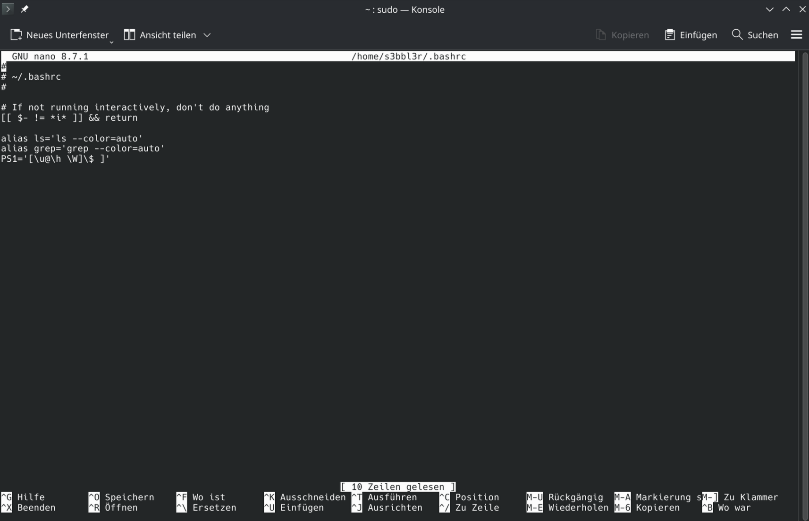

Terminalpersonalisierung
Keeks
Man fährt nach getaner Arbeit wie immer über das Terminal die Workstation per Befehl herunter und wundert sich , wieso sich die Gehäuselüfter nicht aufhören zu drehen.
Erst die Panik in der Stimme des dich anrufenden Kollegen und die nicht enden wollenden Drehgeräusche der Kühlung bringen dich langsam zu einer Einsicht, die dir nun ebenfalls verbal bestätigt wird: Du hast nicht deinen PC, sondern den Datenserver, an dem du heute Routinearbeiten durchführen solltest herunter gefahren.
Um solche Peinlichkeiten in Zukunft möglichst zu vermeiden bietet sich eine visuell Abgrenzung durch Personalisierung des Eingabe-Prompts und Terminals an. Dies kann man z.B. durch Ändern des Hintergrundes in den Terminaleinstellungen der grafischen Oberfläche durchführen. Diese Methoden sollten nahezu identisch auf anderen Linux Distributionen durchführbar sein.
In den Terminaleinstellungen der GUI(Graphical User Interface) eine markante Hintergrundfarbe für Server-Verbindungen wählen.
In der Datei ~/.bashrc lässt sich der Prompt (PS1) individuell anpassen. Diese Datei kann mit dem favorisierten Editor geöffnet werden. Hier am Beispiel für Nano.
sudo nano ~/.bashrc
Inhalt von ~/.bashrc

Ein Beispiel für einen blauen Prompt:
PS1='\[\e[0;34m\]\u@\h:\W\$\[\e[0;39m\]'
(Hinweis: Je nach Linux-Distribution können die Pfade variieren.)
Ein typischer Fallstrick: Besonders beim Kopieren von Befehlen aus Guides (z.B. Dieser Blog!) oder von KIs werden oft unsichtbare Steuerzeichen oder falsche Formatierungen (wie ISO-8859-1) mitkopiert. Das führt zu Fehlermeldungen beim Start des Terminals. Tipp: Befehle immer erst in einen einfachen Texteditor kopieren oder manuell tippen, um „sauberen“ Code zu garantieren. In Fällen bei denen ganze Scripte von Steuerzeichen bereinigt werden müssen bieten sich wiederrum kurze Befehle im Terminal an.
Dieser Code hier löscht z.B. alle ASCII Steuerzeichenin einer Datei, behält aber Zeilenumbrüche (\n) und Tabulatoren (\t) bei
sed 's/[[:cntrl:]]//g' input.txt > output.txt